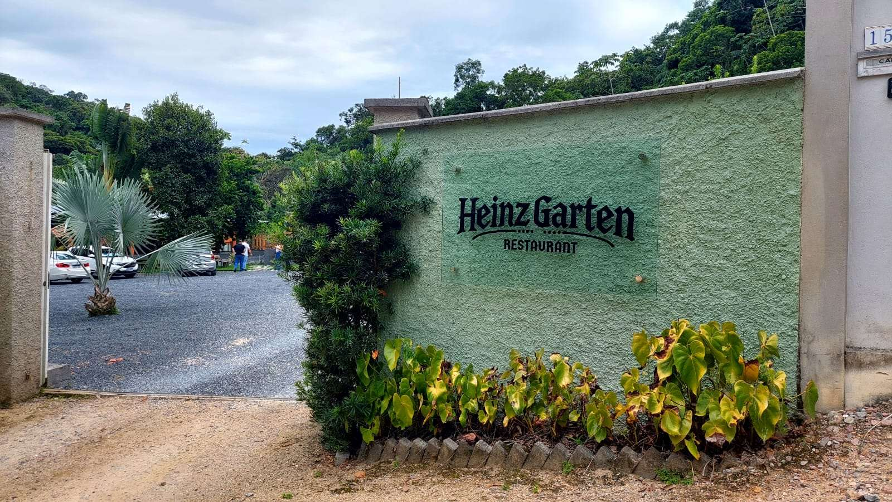
Heinz Garten Restaurant & Biergarten
Culinária alemã numa chácara com lago, ponte e jardim, no Centro de Guabiruba.
Um passeio pelo jardim
Mapa ilustrativo, fora de escala.
A ponte e o lago
Mesas redondas de madeira à beira do lago, ponte, deck, gramado e palmeiras.
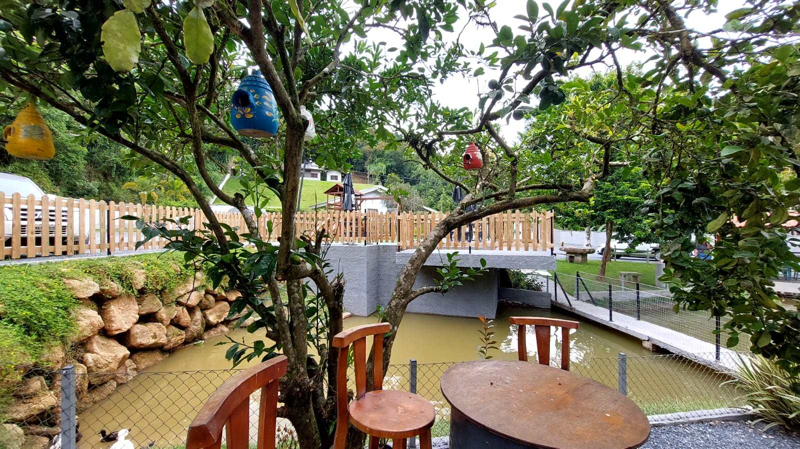
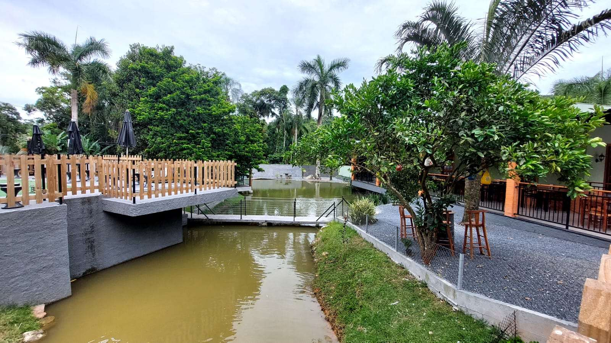
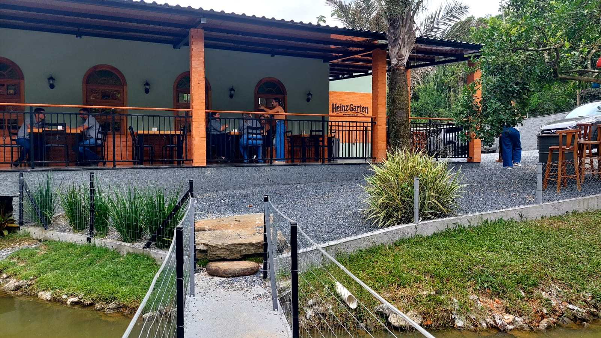
“Este espaço nasceu das mãos dedicadas do meu pai, que transformou cada canto desta chácara com cuidado, planejamento e um talento natural para criar beleza e funcionalidade.”Helfi Kormann, sobre o pai, Heinz Kormann
Salão e bar
Salão coberto com vista para o lago e bar com chopp. A casa aceita cartão de crédito.
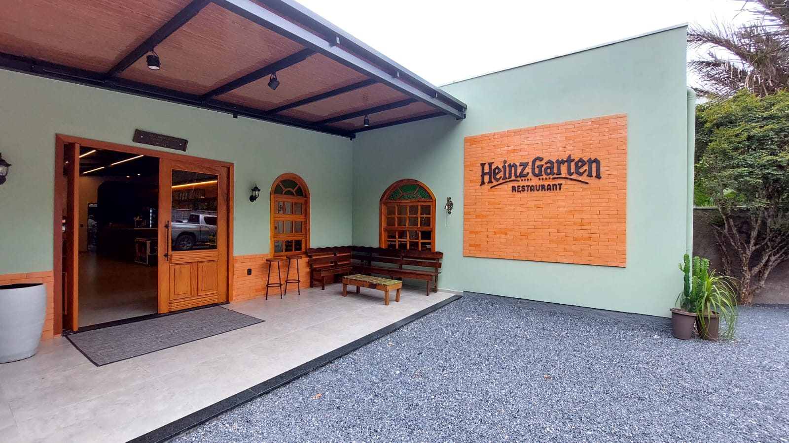
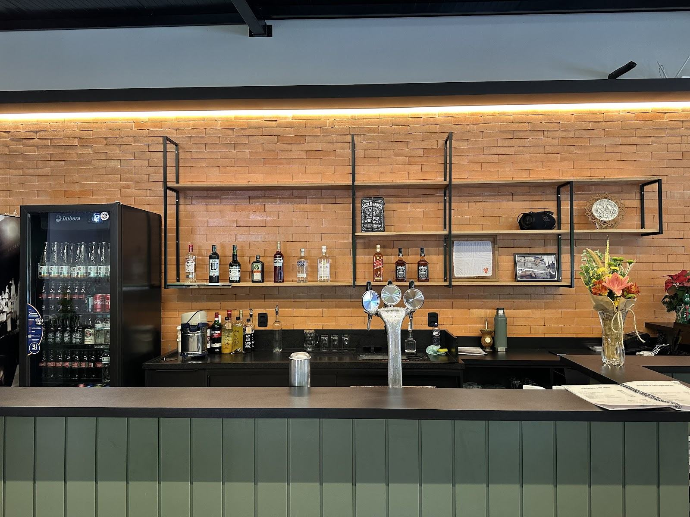
À mesa
Pratos citados no cardápio pelo portal de turismo de Guabiruba. Valores sob consulta.
Marreco recheado
A “tradição culinária do marreco” da família.
Sob consultaEisbein
Joelho de porco pururucado.
Sob consultaChurrasco de festa
Citado no cardápio do portal de turismo.
Sob consultaChopp e caipirinha de vinho
Chopp gelado e a caipirinha de vinho para acompanhar.
Sob consulta-
Prato especial da casa · 3 a 4 pessoas
Para dividir na mesa:
- salsichas Schüblig, Servela, Frankfurt e Weisswurst
- bistecas
- batatas com açafrão
- chucrute
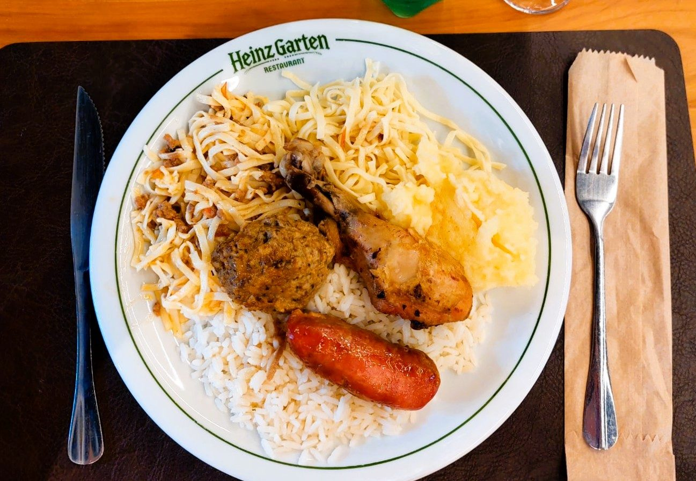
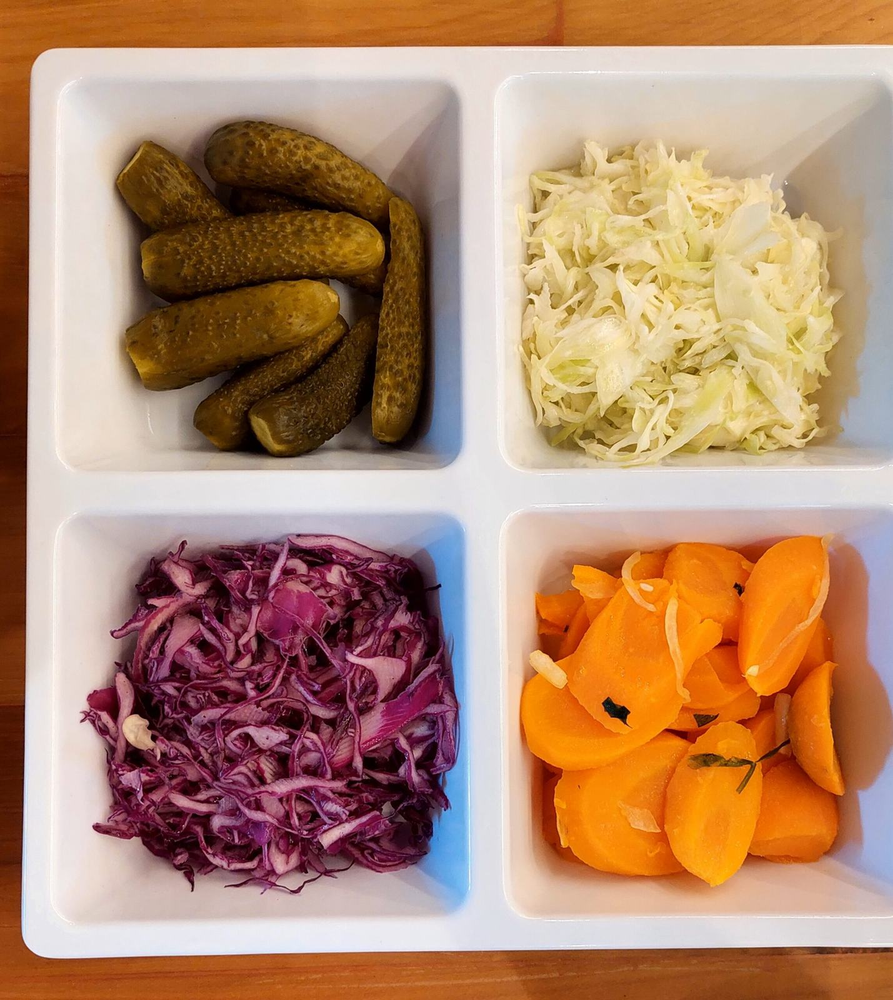
O nome: “Jardim Heinz”
Heinz Garten quer dizer “Jardim Heinz”. É uma homenagem da Helfi ao pai, Heinz Kormann. A família é a mesma do antigo Restaurante Schumacher, e a casa nova, nas palavras dela, preserva “a tradição culinária do marreco”.
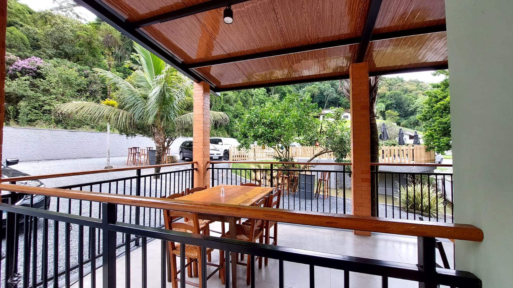
- 1962
Osvaldo Schumacher abre o Restaurante Schumacher, que fica conhecido pelo marreco recheado com macarrão caseiro. Em 1974, a casa passa para a família Kormann.
- 2023
Em janeiro, o Schumacher fecha as portas depois de 61 anos.
- 2025
No fim do ano, Helfi Kormann, neta de Renata Schumacher Kormann, abre o Heinz Garten.
Ponto 18 da Rota do Bauer
A pintura Bauernmalerei está na decoração da casa. Somos o ponto 18 da Rota do Bauer, lançada em 24 de setembro de 2026. Em julho de 2026, a pintura virou patrimônio imaterial de Guabiruba.
Ver os 20 pontos da rota no Guabiruba Zeitung
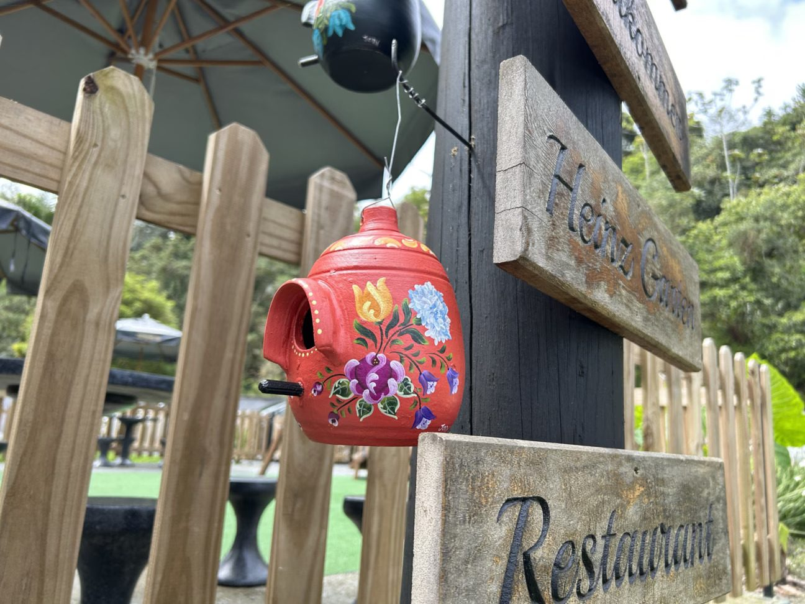
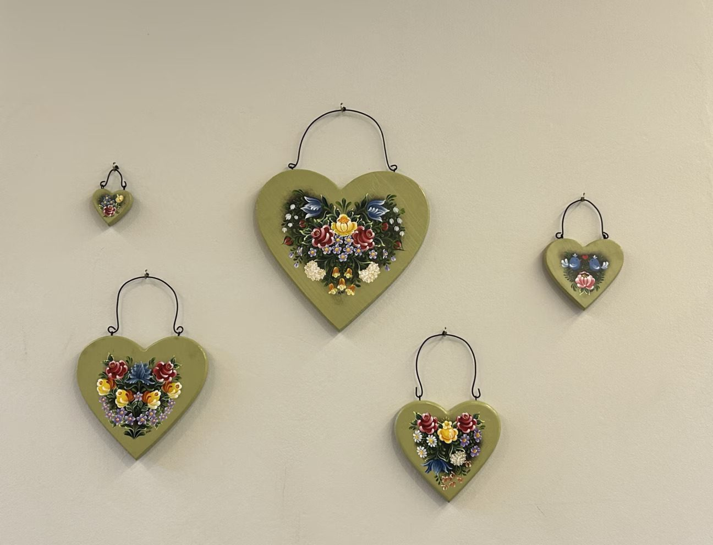
Sua festa no jardim
Quer fazer um encontro ou uma festa no Heinz Garten? Fale com a gente pelo WhatsApp.